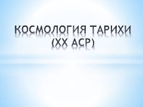

KTKoinotning kelib chiqishi va rivojlanish nazariyalari tarixi haqidagi ilmiy qo'llanma.
Ushbu asar koinotning kelib chiqishi va rivojlanishi haqidagi ilmiy qarashlarning shakllanish tarixini yoritib beradi. Unda Albert Eynshteyn, Aleksandr Fridman va Edvin Xabbl kabi olimlarning koinotning kengayishi hamda uning tuzilishi borasidagi nazariyalari tahlil qilinadi.